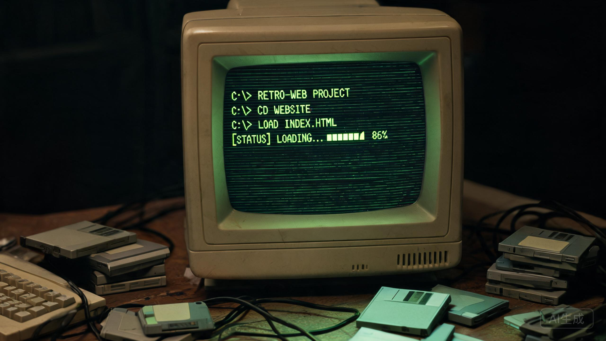
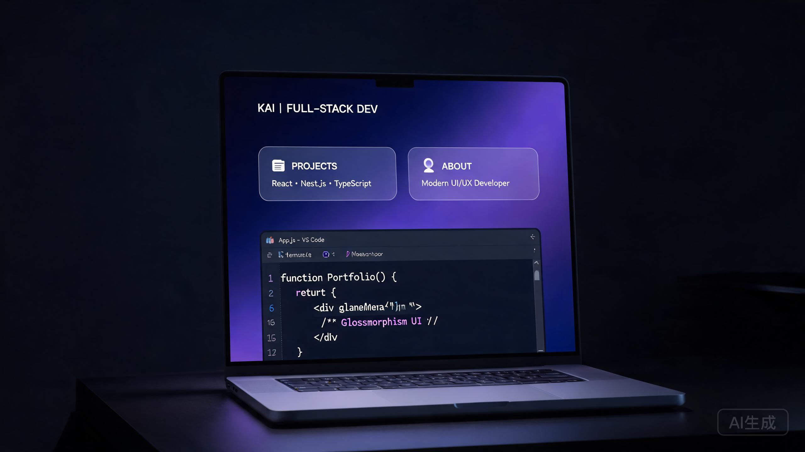
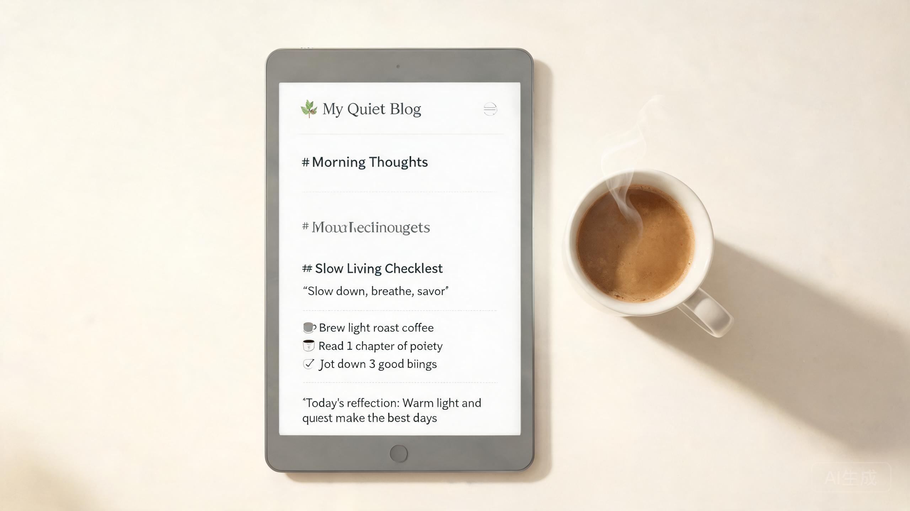

你好，我是PaperClip 👋
📍 中国大陆 · 在校学生一名普通的学生，喜欢折腾网页、玩 Minecraft、听明日方舟：终末地的歌。 相信"先动手做出来，再慢慢学好"——这个站点就是我边学边做出来的 99% Vibe Coding 作品。
我的轨迹
现在
在校学生
边学边玩白天上课，课余时间折腾自己的小项目：写网页、开服务器、剪点视频。
这个站点
个人主页 PaperClip
HTML / CSS / JS你现在看到的这个网站。99%AI + 1%人工，部署在 Cloudflare Pages 上，还带了一个背景音乐播放器。
兴趣
Minecraft
玩家 / 服主从挖矿盖房到研究服务器，Minecraft 页面里有我常玩的服务器状态。
兴趣
明日方舟：终末地
玩家喜欢终末地的音乐，所以把原声集放进了这个站点的背景音乐里。
持续
正在学的
JavaScript · Python目标是有一天能不看教程独立写出想要的东西，把 Vibe Coding 的比例从 99% 降下来一点。
未完待续
what are you waiting for?
Is nothing here. —— 下一站，等我把它们做出来。
复古实验
💾 一台 1997 年的 DOS 电脑
开机进入 DOS：dir 翻硬盘、type 看文件、运行 bbs.com 听 Modem 拨号握手，报上呼号登录 90 年代的 BBS 站。建议戴上耳机。
接通电源，进入 DOS 复古模式 →正在练习的技能
HTML / CSS65%
JavaScript40%
AI 辅助编程（Vibe Coding）80%
Minecraft 服务器折腾70%
Python（入门中）25%
Git / 部署50%
我的项目

💾 复古 DOS 终端
一台 1997 年的 486 电脑：BIOS 开机、DOS 命令、拨号 BBS、光圈科技终端、贪吃蛇，纯前端实现。
⛏️ Minecraft 服务器
自己折腾的 MC 服务器，支持实时状态查询、在线地图、客户端整合包下载，还有交流群。

🌐 PaperClip 个人主页
你现在看到的这个网站。99% Vibe Coding，部署在 Cloudflare Pages，带 PWA 离线支持与背景音乐。

📝 个人博客
纯前端 Markdown 博客，文章放在 posts/ 目录，支持标签筛选、关键词搜索、离线阅读。